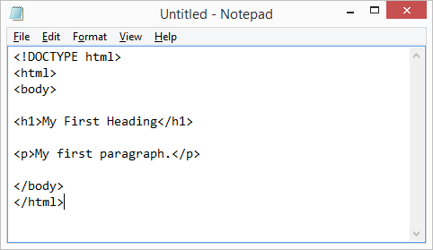

HTML
- HTML [Wiki]
- мова опису структури сторінок документів, яка дозволяє звичайний текст форматувати в абзаци, заголовки, списки та інші структури, створювати посилання на інші сторінки. Це текстова мова, в якій інструкції з форматування, що називаються тегами, вбудовані в розділи документа, які містять конкретну інформацію. Теги повідомляють браузерам, як форматувати і представляти інформацію на екрані.

Мова гіпертекстової розмітки HTML була запропонована Тімом Бернерсом-Лі у 1989 як один з компонентів технології розробки розподіленої гіпертекстової системи World Wide Web. Ідея гіпертекстової інформаційної системи полягає у тому, що користувач має можливість переглядати документи (сторінки тексту) у найбільш зручному для себе порядку, а не послідовно, як це прийнято при читанні книг. Досягається це шляхом створення спеціального механізму пов`язуваня різних сторінок тексту за допомогою гіпертекстових посилань.
Мова НТМL дозволяє визначити структуру електронного документа з поліграфічним рівнем оформлення. Результуючий документ може містити різноманітні елементи: ілюстрації,аудіо і відео фрагменти. Мова НТМL включає розвинені засоби для визначення кількох рівнів заголовків, шрифтових виділень, різних груп об’єктів та багато інших можливостей.
Важливим чинником, який вплинув на розвиток мови HTML, став її вибір за основу для гіпертекстової бази даних звичайного текстового файла, який можна створювати у будь-якому текстовому редакторі на будь-якій апаратній платформі у середовищі будь-якої операційної системи.
Таким чином, гіпертекстова база даних у концепції WWW – це набір текстових файлів, розмічених мовою HTML, яка визначає форму представлення інформації (розмітка) і структуру зв’язків цих файлів (гіпертекстові посилання).
За основу моделі розмітки документів у HTML прийнята тегова модель. Тегова модель описує документ як сукупність контейнерів, кожен з яких починається і закінчується тегами. Тобто документ НТМL є не чим іншим, як звичайним АSСII-файлом з доданими до нього керуючими НТМL-кодами (тегами).
Теги НТМL-документів в основному є простими і зрозумілими для використання, оскільки вони створені за допомогою загальновживаних слів англійської мови, зрозумілих скорочень і позначень.
НТМL-тег складається з імені, за яким може слідувати необов’язковий список атрибутів тегу. Текст тегу вміщується у кутові дужки (<І>). Найпростіший варіант тегу – ім’я, вміщене у кутові дужки. Для більш складних тегів характерна наявність різних атрибутів, які можуть мати конкретні значення, визначені для видозмінення функцій тегу.
Атрибути тегу слідують за ім’ям і відділяються один від одного одним або кількома пропусками. Порядок запису атрибутів у тегу не має значення. Значення атрибута слідує за знаком рівняння, який стоїть після імені атрибута.Якщо значення атрибута – одне слово або число, його можна вказати безпосередньо після знаку рівняння, не виділяючи додатково. Решту значень необхідно вміщувати у одинарні або подвійні лапки, особливо якщо вони містять декілька розділених пропусками слів.
Найчастіше НТМL-теги складаються з початкового і кінцевого компонентів, між якими розміщуються текст та інші елементи документа. Ім’я кінцевого тега ідентичне імені початкового тегу, але перед ім’ям ставиться коса риска (/) (наприклад, для тегу заголовка <ТIТLЕ> закриваючою парою буде ). Кінцеві теги не містять атрибутів.
При використанні вкладених тегів їх слід закривати, починаючи з останнього і рухаючись до першого.
Деякі НТМL-теги не мають кінцевого компонента, оскільки є автономними елементами. Наприклад, тег зображення
Для створення HTML-документа можна застосувати редактор ASCII (зокрема, Блокнот системи Windows). Такі редактори дозволяють вводити HTML-теги, не додаючи до створеного нічого додатково. Створення документа у такому редакторі дозволяє паралельно переглядати результат у програмі- браузері.
Інший тип редакторів – візуальні HTML-редактори, наприклад, Microsoft FrontPage. Їх інтерфейс побудований за тим же принципом, що і інтерфейс текстового процесора, такого, як, наприклад, Word. Для роботи з візуальним редактором можна взагалі не володіти мовою HTML. Недоліком візуальних редакторів є те, що розмір створюваного ними HTML-документа у декілька разів більший, ніж документа, створеного звичайним Блокнотом системи Windows. В умовах низької пропускної здатності вітчизняних мереж цей недолік, який стосується швидкості завантаження сторінки (і, відповідно, вартості часу, який на це витрачається), є досить суттєвим недоліком (файл .htm, створений у WORD, в 4 - 9 разів більший, ніж файл аналогічного змісту, створений програмою Блокнот).